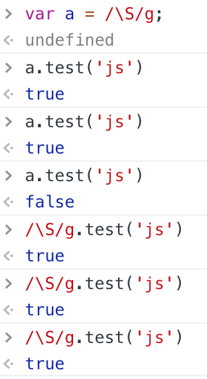
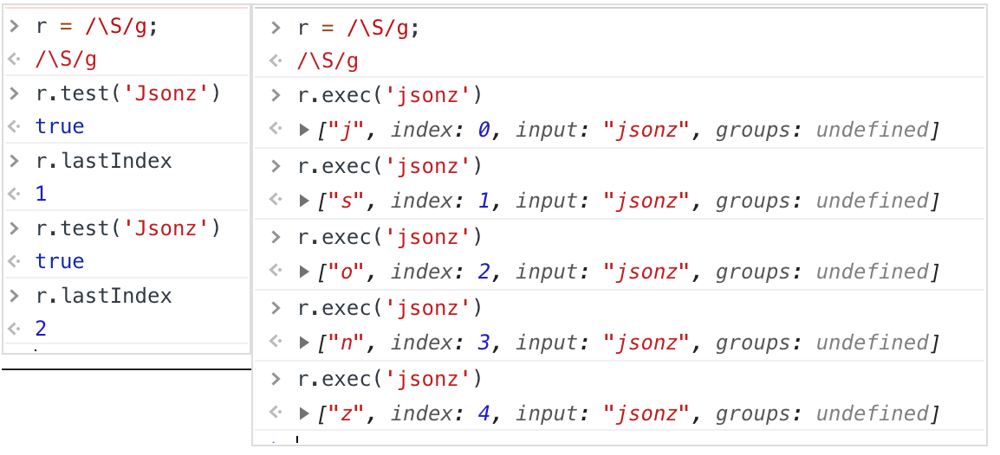

今天测试提一个jira给我，说有一个很诡异的bug，表单验证有时候会成功，有时候会失败。
而且很有规律性的，两下成功，接着失败，再两下成功，再失败…看代码也没什么问题，\S匹配任何非空字符，g全局查找，这么简单的一个正则怎么可能会出错。
1 | const r = /\S/g; |
然后直接拿到控制台去测试，发现也有类似的问题，但是如果每次都直接调用正则表达式的test方法，又不会有问题。所以一开始怀疑是把正则对象存起来导致的。
后面在 stackoverflow和 MDN上找到真正的原因。
当设置全局标志的正则使用test()
如果正则表达式设置了全局标志，test() 的执行会改变正则表达式 lastIndex属性。连续的执行test()方法，后续的执行将会从 lastIndex 处开始匹配字符串，(exec() 同样改变正则本身的 lastIndex属性值).
这意思就很明显了，我们每一次搜索匹配中之后，下次就从他的下一位开始执行搜索。

所以最后看业务场景，完全不需要加这个g，直接去掉就算fix了。当然如果你头很铁…一定要加g的话，那也可以每次执行完重置 lastIndex。
1 | const r = /\S/g; |
last 谢谢大钊子和坤少两位同事